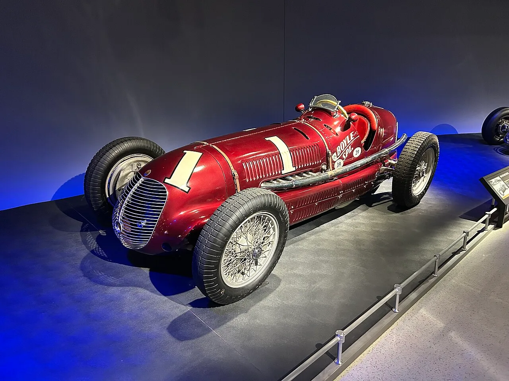
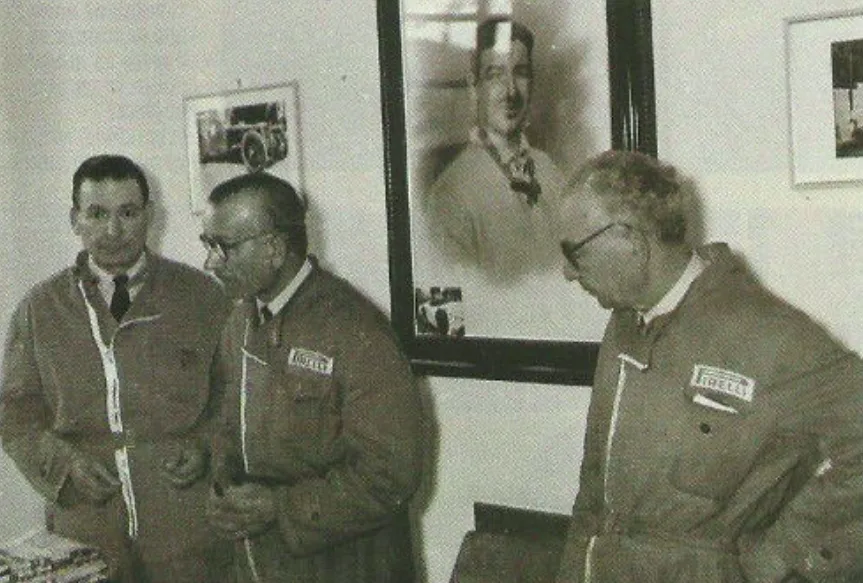

▲ 1939년과 1940년 인디애나폴리스 500을 연속 제패한 마세라티 8CTF '보일 스페셜'. 영화 '마세라티: 더 브라더스'는 이 우승 도전기를 스크린에 담는다
1. 페라리·람보르기니 이어 마세라티도 영화로
이탈리아 럭셔리 자동차 브랜드 마세라티의 창립 역사를 다룬 영화 '마세라티: 더 브라더스(Maserati: The Brothers)'가 개봉을 예고했다. 안소니 홉킨스, 알 파치노, 앤디 가르시아, 제시카 알바 등 할리우드 스타들이 대거 출연하며, 로버트 모레스코 감독이 연출을 맡았다. 각본은 아만다 모레스코와 스테파노 토리시가 함께 썼다. 촬영은 이탈리아 자동차 산업의 심장부인 모데나 현지와 로마 치네치타 스튜디오에서 진행됐다.
이 작품은 앞서 나온 '포드 V 페라리', '람보르기니: 전설이 된 남자' 등과 같은 제작진이 참여한 것으로 알려지며 더욱 주목받고 있다. 이탈리아 기준 개봉 예정일은 10월 15일이며, 해외 배급 일정은 추후 확정될 예정이다.

▲ 1948년 촬영된 마세라티 형제 에르네스토(왼쪽), 에토레, 빈도(오른쪽)의 모습 ⓒ Wikimedia Commons
2. 1914년 볼로냐 차고에서 시작된 형제들의 도전
마세라티는 1914년 알피에리, 에토레, 에르네스토 삼형제가 이탈리아 볼로냐의 작은 차고에서 '오피치네 알피에리 마세라티'를 설립하며 시작됐다. 마세라티 형제는 모두 여섯 명으로, 카를로(1881~1910), 빈도(1883~1980), 알피에리(1887~1932), 마리오(1890~1981), 에토레(1894~1990), 에르네스토(1898~1975)다. 이 가운데 카를로가 가장 먼저 자동차 업계에 발을 들였고, 이후 동생들이 뒤를 이었다.
창립을 이끈 알피에리는 1932년 경주 중 입은 부상의 후유증으로 세상을 떠났고, 이후 빈도가 회사를 이어받아 대표를 맡았다. 영화는 알피에리, 빈도, 카를로 삼형제의 삶을 중심으로 전개되며, 배역은 알피에리 역에 미켈레 모로네, 빈도 역에 살바토레 에스포지토, 카를로 역에 로렌초 데 무어가 각각 맡았다. 알 파치노는 마세라티 가문의 초기 투자자인 사업가 빈첸초 바카로 역을, 안소니 홉킨스 역시 형제들의 초기 후원자 역할로 출연한다.
📍 마세라티 삼지창 로고의 유래
마세라티의 상징인 삼지창 로고는 막내 마리오 마세라티가 디자인한 것으로 알려져 있다. 볼로냐 마조레 광장에 있는 해신 넵튠 분수의 삼지창에서 영감을 받았으며, 형제들이 몸담았던 자동차 산업의 힘과 역동성을 상징한다는 해석이 전해진다.
3. 인디500 2연패의 주역, 마세라티 8CTF
영화가 다루는 핵심 사건 중 하나는 1939년과 1940년 인디애나폴리스 500 연속 우승이다. 마세라티 8CTF는 드라이버 윌버 쇼가 몰아 1939년 우승을 차지했고, 이듬해인 1940년에도 같은 조합으로 우승을 지켜냈다. 미국에 건너간 이 차량은 보일 레이싱 헤드쿼터스의 후원을 받아 '보일 스페셜(Boyle Special)'이라는 애칭으로 불렸으며, 아마란스색 도장과 대형 타이어로 현지 사양에 맞게 손질됐다. 이는 이탈리아 브랜드가 미국 최고 권위의 레이스를 연속으로 제패한 상징적인 사례로 지금까지도 회자된다.
| 연도 | 내용 |
|---|---|
| 1939년 | 드라이버 윌버 쇼, 평균속도 시속 약 115마일로 우승 |
| 1940년 | 같은 차량·드라이버 조합으로 연속 우승 |
| 차대번호 | 3032번, 애칭 '보일 스페셜' |
| 현재 | 인디애나폴리스 모터 스피드웨이 박물관 전시 |
이 8CTF의 우승은 이탈리아 메이커가 인디500을 제패한 몇 안 되는 사례 중 하나로, 마세라티가 자동차 제조사이자 레이싱 팀으로서 초기부터 국제 무대에서 실력을 인정받았음을 보여주는 대표 기록이다. 관련 자료는 마세라티 공식 홈페이지에서도 확인할 수 있다. 바로가기
4. 왜 자동차 브랜드들은 영화로 만들어지나
최근 몇 년간 이탈리아 슈퍼카 브랜드들의 창립 서사를 다룬 영화가 잇따라 만들어지고 있다. 2023년 개봉한 '페라리'는 마이클 만 감독이 연출하고 아담 드라이버가 엔초 페라리 역을 맡아 브랜드의 초기 레이싱 도전기를 그렸다. 앞서 2022년 공개된 '람보르기니: 전설이 된 남자'는 창업자 페루치오 람보르기니가 라이벌 엔초 페라리에게 무시당한 뒤 자신만의 브랜드를 만들어가는 과정을 다뤘다. 2019년 맷 데이먼·크리스찬 베일 주연의 '포드 V 페라리' 역시 자동차를 소재로 한 실화 영화로 흥행에 성공하며, 자동차를 잘 모르는 일반 관객층까지 끌어들인 바 있다.

▲ 람보르기니의 상징적인 클래식 모델 미우라. 2022년작 '람보르기니: 전설이 된 남자'는 창업자 페루치오 람보르기니의 이야기를 다뤘다 ⓒ Wikimedia Commons
이런 영화들은 브랜드의 역사와 정체성을 대중에게 각인시키는 효과적인 마케팅 수단으로도 작용한다. 자동차 애호가를 넘어 일반 관객층에까지 브랜드 스토리를 전달할 수 있다는 점에서, 완성차 업체 입장에서는 전통적인 광고보다 파급력 있는 브랜드 경험을 제공하는 셈이다. '마세라티: 더 브라더스' 역시 이런 흐름의 연장선에 있으며, 페라리·람보르기니와 이탈리아 3대 슈퍼카 명가가 모두 자신들의 창립 서사를 스크린에 옮기게 됐다.
5. 영화 공개와 함께 주목받는 현재의 마세라티
영화 개봉을 앞두고 마세라티의 현재 라인업에도 관심이 쏠린다. 마세라티는 SUV 모델 그레칼레를 비롯해 브랜드 고유의 삼지창 정체성을 현대적으로 계승한 모델들을 판매 중이며, 국내에서도 최근 부산 해운대에 영남권 최대 규모의 신규 전시장을 여는 등 시장 확대에 나서고 있다. 100년이 넘는 브랜드 역사와 최신 라인업이 동시에 조명받는 시점에, 영화가 국내 소비자들에게 마세라티라는 브랜드를 새롭게 각인시키는 계기가 될지 주목된다.

▲ 마세라티의 현행 SUV 모델 그레칼레 트로페오. 100년 넘는 브랜드 역사와 최신 라인업이 함께 조명받고 있다 ⓒ 마세라티코리아

▲ 그레칼레 트로페오의 후측면. C필러에 새겨진 삼지창 엠블럼이 창립 형제들로부터 이어진 브랜드 정체성을 보여준다 ⓒ 마세라티코리아
✅ '마세라티: 더 브라더스', 이것만은 확인하세요
· 안소니 홉킨스·알 파치노·앤디 가르시아·제시카 알바 출연, 로버트 모레스코 감독 연출
· 1914년 볼로냐 창립부터 1939·1940년 인디500 연속 우승까지가 주요 줄거리
· 이탈리아 개봉 예정일은 10월 15일, 해외 배급은 추후 확정
· 페라리(2023)·람보르기니(2022)에 이어 마세라티까지, 이탈리아 3대 슈퍼카 브랜드 모두 영화화
· 마세라티는 국내에서도 부산 해운대 신규 전시장 개장 등 시장 확대에 나선 상태
6. 정리
'마세라티: 더 브라더스'는 페라리·람보르기니에 이어 이탈리아 3대 슈퍼카 명가의 창립 서사가 모두 스크린에 옮겨졌다는 점에서 상징성이 크다. 1914년 볼로냐의 작은 차고에서 시작해 인디애나폴리스 500을 두 차례 제패하기까지, 형제들의 도전기는 브랜드 정체성을 관객에게 각인시키는 강력한 마케팅 수단이 될 전망이다. 자동차 브랜드의 영화화가 하나의 트렌드로 자리 잡은 가운데, 마세라티가 국내 시장 확대와 맞물려 이번 영화로 얼마나 화제성을 끌어올릴 수 있을지 지켜볼 대목이다.